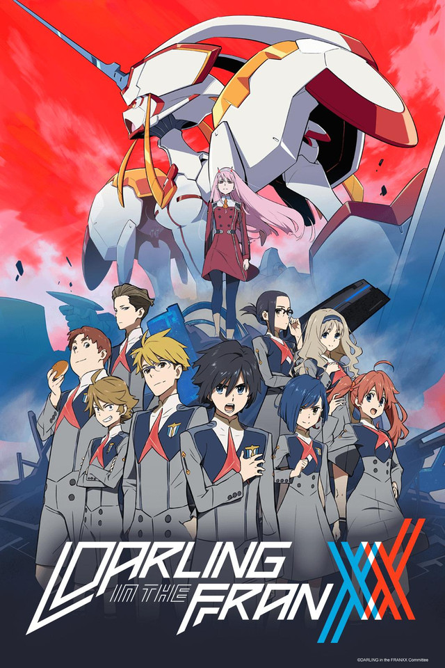

5 Favoritos da Semana
1- Kimetsu no Yaiba

Em Kimetsu no Yaiba, Tanjiro, um bondoso jovem que ganha a vida vendendo carvão descobre que sua família foi massacrada por um demônio. E, para piorar, Nezuko, sua irmã mais nova e única sobrevivente, também acabou transformada em um demônio.
2- Shingeki no Kyojin
.jpg)
O anime começa nos apresentando Eren Jaeger, Mikasa Ackermann e Armin Arlelt, as três principais
figuras do anime.
Durante esses primeiros episódios vemos a vida pacata dessas pobres crianças. Porém tudo muda quando
descobrimos que
as muralhas que rodeiam a cidade separam os humanos dos Titãs. Em seguida é contado que não há Titãs
faz mais de
100 anos e os únicos que podem sair da muralha são os membros da tropa de exploração. Então
descobrimos que Eren
tem o sonho de um dia entrar para a tropa de exploração. Durante esse tempo somos apresentados ao
regimento, que
tem como objetivo manter a ordem dentro das muralhas, como uma polícia. Então coisa vai coisa vem,
e o pai de Eren lhe dá uma chave que servirá para abrir o porão da casa em um momento certo.
3- Darling in the Franxx

Darling in the Franxx se passa em um futuro distópico e pós-apocalíptico onde os remanescentes da
civilização humana abandonaram a superfície do planeta. Adultos e crianças existem em ambientes
contrastantes entre si.
Os adultos vivem em cidades tecnológicas (latifúndios) chamados de "plantações" (plantations).
4- One Piece

A saga que marca o começo de One Piece tem início nos mostrando como o protagonista Monkey D.
Luffy acidentalmente consumiu a a fruta Akuma no Mi e ganhou suas habilidades de borracha ainda
criança.
Embora a fruta também tenha causado a perda de sua capacidade de nadar,
ele não deixou que isso afetasse seu sonho de encontrar o tesouro One Piece e se tornar o Rei dos
Piratas.
5- Jujutsu Kaisen

Apesar do estudante colegial Yuuji Itadori ter grande força física, ele se inscreve no Clube de
Ocultismo.
Certo dia, eles encontram um “objeto amaldiçoado” e retiram o selo, atraindo criaturas chamadas de
“maldições”.